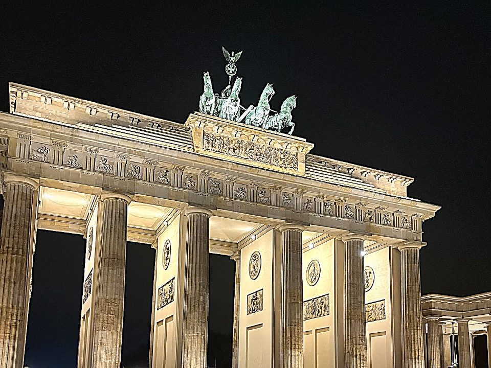
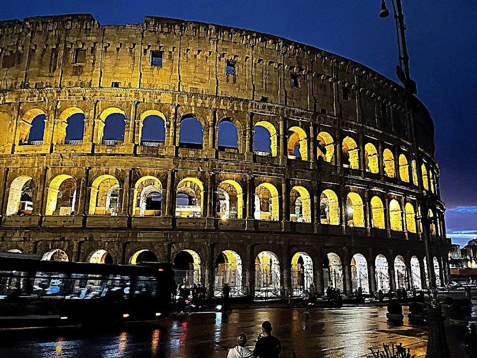
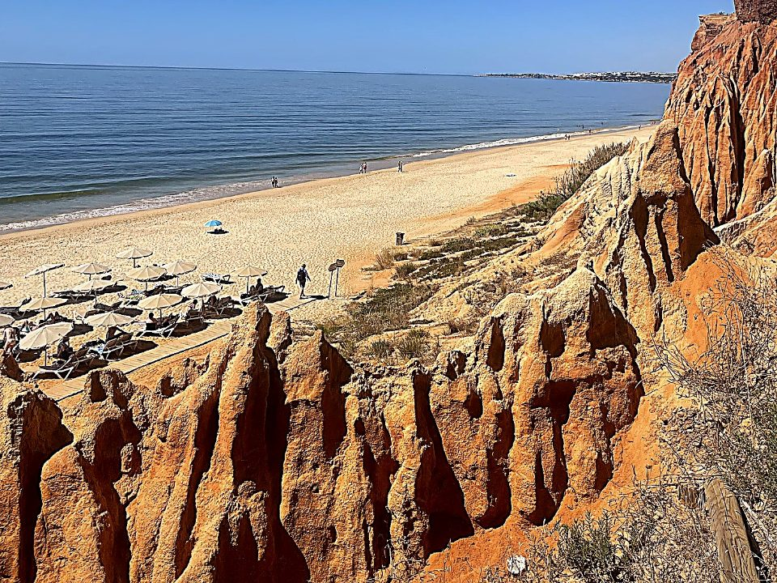
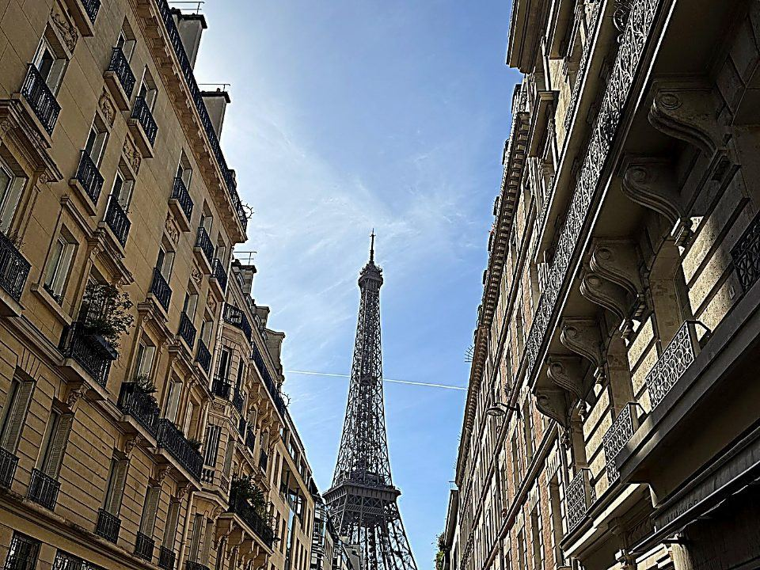

Together Travel Club is where you meet people with travel plans like yours. Whatever you're into, or want to try, you can connect with others travelling to the same place as you, planned trip or not.
A few examples of what you might see as a member. Pick a destination and imagine who else could already be travelling there, then decide for yourself whether you'd like to say hello.




Four steps take you from signing up to messaging your next travel companion.
Add your interests, travel style, and where you're travelling to, or just where you'd like to go. It only takes a couple of minutes to get started.
We connect you with members travelling to a similar place, or who travel in a similar way to you, whether solo, as a couple, or with friends.
Upgrade to Club+ to verify your ID, get more connections, and choose to connect only with other verified members.
Chat as much as you like before you set off, and meet up in person before your trip if you'd both like to.
Demo: joining here also "signs you in" to a preview of the member dashboard. Your name and email are saved only in this browser (localStorage), nothing is sent anywhere, and there's no real account or security yet.
Nothing here is required to sign up — but the more you fill in afterwards, the more precise your shortlist becomes.